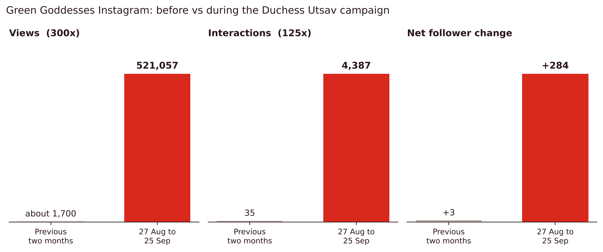
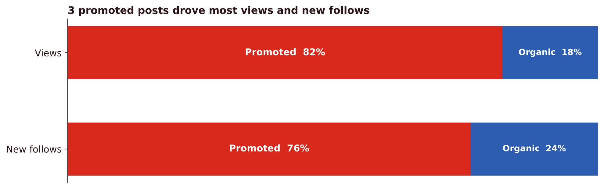
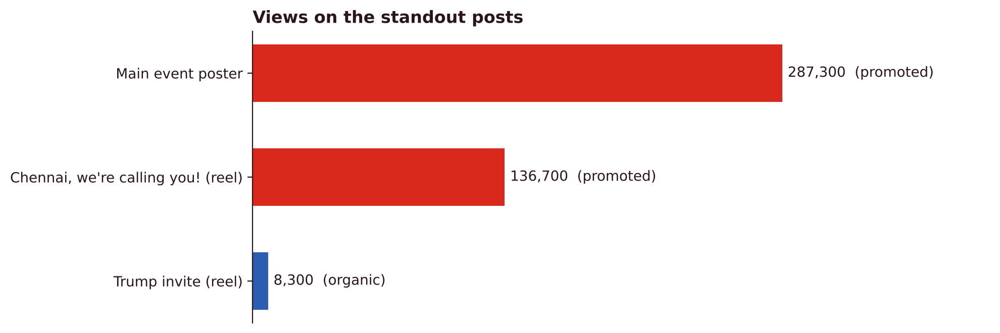
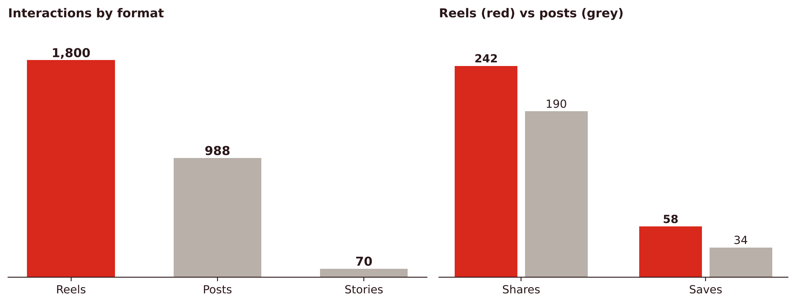

1Marketing analytics
Green Goddesses at the Duchess Utsav
An Instagram campaign for a Chennai women's sustainability collective, measured with Instagram Insights.
Build awareness, followers and footfall for a two-day exhibition and fashion show at Hotel Savera, Chennai (25 to 26 Sept 2026), in under a month.
Strategy, a 58-piece content calendar, 3 promoted posts, reels, carousels and posters, a designer-wear shoot, FEDHA collab reels and a results report.
521,057 views in a month, up from about 1,700 in the previous two months, with 95% from non-followers.
In the week of 14 to 20 Sept, views were up 201% on the week before. Google's AI Overview for "green goddess chennai" now cites the Instagram page and names the event.
Before and during the campaign
Views are up about 300 times and interactions 125 times. Followers grew by 284 net, up 23%, against 3 in the previous two months.

Paid versus organic
Three promoted posts drove 82% of views and 76% of new follows. Organic content did a different job.
Where views and follows came from
The 3 promoted posts targeted women 35+ in Chennai.

Views on the standout posts
Promoted posts carried the reach.

Promoted
- "Chennai, we're calling you!" reel: 136,700 views, 102,100 reached, 147 follows, 1,300 likes, 74 shares, 47 saves. The top performer.
- Main event poster: 287,300 views, 147,800 reached, 83 follows.
Organic, no ad spend
- Stall introductions and event-day reels got the most comments and shares.
- "Trump invite" reel: the best organic reel, with 8,300 views, 150 likes, 24 comments and 29 shares.
- FEDHA collab reels: 11,900 views (silver collection) and 5,700 (fashion show).
Which formats worked
Interactions by format
Reels led on interactions, shares and saves.

Who it reached
This confirmed the targeting worked. The audience is most active between 6 and 9 pm.
What I did
- Social media strategy and a 58-piece, 4-phase content calendar: stall spotlights, final push, live event coverage, post-event recap.
- Paid promotion: proposed and managed 3 promoted posts targeting women 35+ in Chennai.
- Content creation: reels, carousels, posters, and an introduction post or reel for every vendor stall.
- Directed and produced a multi-location designer-wear shoot for Reels.
- Collab reels with jewellery partner FEDHA.
- Analysed Instagram Insights and wrote a results report and growth plan for the client.
What I learned
- Paid ads brought in new audiences; organic content built engagement.
- Collabs with partner brands multiply reach for a small page.
- Instagram cannot measure walk-ins. Stall owners reported Instagram-driven visitors, but I do not have a footfall number, so I do not claim one.
The plan I wrote for the client
Target: 2,000 followers by 31 Dec 2026 (+500, up 33%). 3 to 4 reels and 3 posts a week at 6 to 9 pm, a Green Club membership drive, brand collabs, small targeted ads for key moments, and monthly reporting.